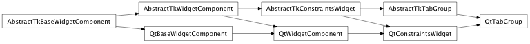
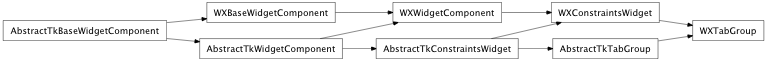

Bases: enaml.components.layout_task_handler.LayoutTaskHandler, enaml.components.constraints_widget.ConstraintsWidget
A LayoutComponent that arranges its children as a group of tabs.
The TabGroup provides a very simple way of laying out a number of children as tabs, suitable for configuration dialogs and the like. It is not suitable for rich tab interfaces where the group of tabs is the central focus of the application. For that, use a Notebook.
A read-only cached property that returns the tab children of this tab group.
A readonly property which returns the selected index. If there are no tabs in the group, this will return -1.
A readonly property which returns the selected tab. If there are no tabs in the group, this will return None.
A TabPosition enum value that indicate where the tabs should be drawn on the control. One of ‘top’, ‘bottom’, ‘left’, ‘right’. The default value is ‘top’.
How strongly a component hugs it’s contents’ width. A TabGroup ignores its width hug by default, so it expands freely in width.
How strongly a component hugs it’s contents’ height. A TabGroup ignores its height hug by default, so it expands freely in height.
Overridden parent class trait
A reimplemented LayoutTaskHandler handler method which will perform necessary update activity when a relayout is requested.
alias of __NoInterface__

Bases: enaml.backends.qt.qt_constraints_widget.QtConstraintsWidget, enaml.components.tab_group.AbstractTkTabGroup
A Qt implementation of TabGroup.
The change handler for the ‘tab_position’ attribute of the shell object.
Update the widget index with the new value from the shell object.

Bases: enaml.backends.wx.wx_constraints_widget.WXConstraintsWidget, enaml.components.tab_group.AbstractTkTabGroup
A wx implementation of the Tabbed container.
The change handler for the ‘tab_position’ attribute of the shell object.
Update the widget index with the new value from the shell object.
Returns a (width, height) tuple of integers which represent the suggested size of the widget for its current state. This value is used by the layout manager to determine how much space to allocate the widget.